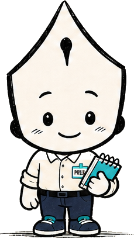

NEWS RUNNER · EPISODE 01
충무맨
오늘의 뉴스를 향해 달립니다.
37.561827°N · 126.991076°E오늘의 취재 · 약 1분
마감을 피해
뉴스를 모아주세요
- 뉴스
- 0 / 7
- 콤보
- 0
- 거리
- 0m
점프 SPACE · 슬라이딩 ↓
모바일은 위로 쓸기 · 아래로 쓸기
NEWS RUNNER · EPISODE 01

37.561827°N · 126.991076°E오늘의 취재 · 약 1분
점프 SPACE · 슬라이딩 ↓
모바일은 위로 쓸기 · 아래로 쓸기
PLAY ANOTHER